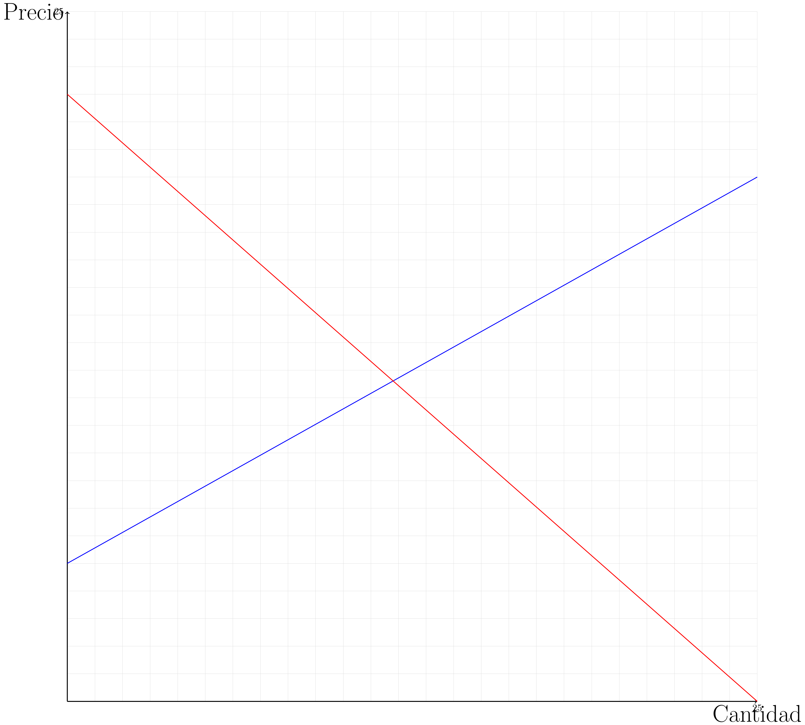
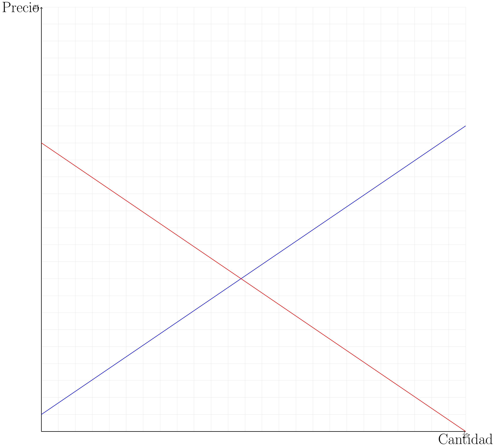

2 Funcionamiento de los mercados.
2.1 Introducción a los mercados:
Una persona se despierta gracias a un reloj de alarma fabricado en Corea, se prepara jugo con naranjas producidas en Colombia, se viste con ropa hecha de algodón producido en Georgia y elaborada en Tailandia, ve noticias en un televisor hecho en Japón, y viaja en un auto fabricado con partes hechas en media docena de países. El comercio de bienes y servicios hoy es más generalizado que nunca en la historia de la humanidad. Los gobiernos han quitado paulatinamente trabas al comercio internacional. Chile ha firmado tratados de libre comercio (TLC) con la Unión Europea, Estados Unidos y Corea del Sur, además de seguir negociando nuevos acuerdos. El comercio internacional incrementa la variedad de bienes, ya que las economías producen bienes diferenciados. La especialización permite que cada economía se enfoque en la producción de aquellos bienes en los que se es mejor.
Como consecuencia, con una oferta más variada, el bienestar de la economía aumenta, aunque ciertos grupos particulares podrían perder con el comercio. La economía como un todo siempre debería ganar comerciando. Los países comercian exportando e importando bienes. Se exportan aquellos bienes en los que se es eficiente en su producción, como el cobre, salmón, uvas, entre muchos otros, y se importan aquellos bienes en los que no se tienen recursos o se es ineficiente en la producción, como petróleo, ropa o automóviles.
Se necesita un mecanismo de asignación alternativo. ¿Puede alguien decidir mejor que yo lo que deseo o necesito? Así como yo sé cuánto estoy dispuesto a sacrificar por tener acceso a un bien, la persona que tiene ese bien tiene una idea de cuánto tendría que recibir para renunciar a ese bien. Esa es la clave del intercambio.
Se enfrenta al intercambio en igualdad de condiciones. Una economía de mercado es un complicado mecanismo que coordina a los individuos, a las actividades y a las empresas por medio de un sistema de precios y de mercados. Este sistema resuelve, sin cálculos centralizados complejos, los problemas de producción y de asignación de recursos en los que intervienen diversas variables y relaciones. En la economía de mercado no existe ningún individuo u organización responsable de la producción, el consumo, la distribución y la fijación de los precios. El mercado es el mecanismo mediante el cual los compradores y los vendedores de un bien o servicio determinan conjuntamente su precio y cantidad. La principal característica de un sistema de mercados es la existencia de un sistema automático de asignación de los recursos a través del intercambio en función de los precios. Los precios coordinan las decisiones de los productores y los consumidores en el mercado. El aumento de los precios tiende a reducir las compras de los consumidores y aumentar la producción.
Entonces, ¿cómo resuelve el mercado el qué, ¿cómo y para quién? El qué, de acuerdo con los bienes que más se valoran; el cómo, con la tecnología que permite alcanzar mayores beneficios a las empresas; y el para quién, con las personas que más valoran los bienes y tienen recursos para pagar esos precios. Una característica deseable de un mecanismo de asignación de recursos es que pueda lograr una distribución eficiente, es decir, que no sea posible mejorar a nadie sin empeorar a otro miembro de la sociedad, mientras no se desperdicien recursos. Adam Smith retrató ese estado de equilibrio como resultado de la acción de una “mano invisible”. La analogía ha sido interpretada como que cada individuo en una sociedad de mercado, al buscar egoístamente su propio bien personal, es llevado como si fuera dirigido por una mano invisible a conseguir lo mejor para todos. Más tarde, con el apoyo de la formalización matemática, se establecieron condiciones que garantizan la eficiencia de los mercados.
Sin embargo, esas condiciones distan enormemente de la realidad, lo que se conoce como fallas de mercado. Por esto, en la vida real se observa una acción mixta entre mecanismos de mercado y centralizados por el estado. En otras palabras, la práctica está llena de fallos de mercado, implicando que el mecanismo de mercado puede ser mejorado bajo una supervisión del estado. Puesto en duda el supuesto de competencia perfecta, existen muchas formas de caracterizar las estructuras de mercado. Probablemente, la más conocida es el monopolio, donde solo hay un oferente. Sin embargo, dependiendo de la cantidad de oferentes o demandantes, se puede hablar de monopsonio, oligopolio, entre otros. Otra estructura conocida es la competencia monopolística.
La demanda, como variable dependiente de los precios, es una relación que establece la cantidad de un bien que los compradores están dispuestos a comprar, teniendo la capacidad para hacerlo, para cada nivel de precios. Se deriva formalmente de un proceso de optimización que se estudia como la teoría del consumidor, donde se relaciona al principio el análisis marginal del beneficio o utilidad que reporta el consumo. Lo que se conoce como ley de demanda es la relación inversa entre cantidad demandada y precios. Es posible construir la demanda de un mercado al agregar las demandas individuales. Este proceso parte por fijar un precio y sumar las demandas de cada participante del mercado a ese precio determinado. El ejercicio se repite para cada nivel de precio y se obtiene la demanda del mercado. Para el espectro de un curso introductorio, no se ahondará en más detalles, pero múltiples factores pueden afectar las demandas individuales y, por consecuencia, la demanda del mercado. Un cambio en las condiciones de análisis, como por ejemplo una pandemia, tendrá efectos en las demandas y provocará desplazamientos de ellas, como en el caso de la demanda por alcohol gel en esos tiempos. En general, todo cambio fuera del marco de variables precio y cantidad implicará un desplazamiento de la demanda.
2.2 Costos de producción:
\[ \pi = IT-CT \Leftrightarrow \pi = IT-CT(H_1,H_2,L,K) \]
Donde “\(\pi\)” es el beneficio, “\(IT\)” el ingreso, y “\(CT\)” es el gasto. Y donde “\(H_1\)” es materia prima, estos son los materiales que se extraen directamente de la naturaleza, como la madera. “\(H_2\)” es insumos, a diferencia de la materia prima son elementos ya procesados, como el cartón. “\(L\)” es mano de obra, es el gasto que se hace por tener empleados, por ejemplo, el sueldo. y “\(K\)” gastos generales, son los gastos que se hacen constantemente, como el arriendo de un lugar.
Ejercicio resuelto:
Se tiene una ferretería que tiene de gastos $100 en materia prima, $150 en insumos, $50 en mano de obra y tiene de ingresos y beneficios $850 y $350 respectivamente ¿Cuánto son sus gastos generales?
Respuesta:
Se tiene una ferretería que tiene de gastos $100 en materia prima, $150 en insumos, $50 en mano de obra y tiene de ingresos y beneficios $850 y $350 respectivamente ¿Cuánto son sus gastos generales?
Respuesta:
Reemplazamos en \(\pi = IT-CT(H_1,H_2,L,K)\). \[ 350 = 850-(100+150+50+K) \]
\[ 350 = 850-300-K \]
\[ 350 = 550-K \]
\[ K = 200 \]
2.3 Oferta:
Detrás de la oferta están quienes pueden llevar a cabo un proceso productivo que genere unidades de la mercancía en análisis. La racionalidad de esos oferentes proviene de que el proceso productivo que utilizan sea rentable, es decir, que los ingresos por vender la mercancía cubran los costos de producirla. En el límite, los oferentes querrán maximizar esa diferencia entre ingresos y costos, conocida como beneficios. La parte de los ingresos se determina por la cantidad producida y el precio al que se vendieron, es decir, el ingreso marginal de un oferente es el precio. Por otra parte, los costos del proceso productivo podrían depender de la cantidad producida.
Estos costos se denominan variables, mientras que los costos que no dependen de la cantidad producida, como el arriendo del espacio donde se lleva a cabo el proceso productivo, se denominan costos fijos. Los costos medios no son más que el cociente de costos sobre la cantidad producida, y el costo marginal será la derivada parcial de los costos con respecto a la cantidad. Este último costo es constitutivo de la oferta. En resumen, el oferente querrá maximizar sus ingresos al mismo tiempo que disminuye lo más posible sus costos.
Gráficamente, si los costos variables tienen una forma cuadrática, se tendrá el siguiente esquema: una curva estrictamente decreciente de costos fijos medios, curvas de costo marginal, costo medio y costos variable medio con tramos decrecientes y luego crecientes. En este contexto, la firma operará si el precio es mayor al costo variable medio. Si ese es el caso y el precio es inferior al costo medio, la firma opera con pérdidas en el corto plazo, ya que puede mitigar algo de los costos fijos. Si esa condición se mantiene en el largo plazo, la firma cerrará. Por el contrario, si el precio es mayor al costo medio, la firma operará con ganancias. Al igual que la demanda, la función de oferta resultante dependerá del precio y de una cierta cantidad de factores. En este caso, dichos factores pueden ser la tecnología o los costos de los insumos productivos.
El ejemplo clásico es una forma lineal, donde el impacto marginal del precio es positivo y conocido como la ley de oferta. En el agregado, la función de oferta refleja las capacidades productivas de todos los oferentes del mercado para cada nivel de precio. Así, a cada nivel de precio se suman las ofertas individuales y se crea la curva de oferta agregada.
La oferta, en breves palabras, es el mínimo valor al cual se está dispuesto a vender determinada cantidad. Donde \(Q\) es la cantidad que se va a producir, \(a\) es una contante y \(b>0\) es la pendiente si asumimos una forma funcional lineal para la relación. Así la función determina el valor del bien que se produce es:
\[ P(Q)=a+bQ \]
Para entender bien mostraremos un gráfico, donde (utilizando punto para los decimales) \(a=0.5\), \(b=0.5\):
| Precio (\(P\)) | Cantidad (\(Q\)) |
| 1 | 1 |
| 1.5 | 2 |
| 2 | 3 |
| 2.5 | 4 |
| 3 | 5 |
| 3.5 | 6 |
| 4 | 7 |
| 4.5 | 8 |
| 5 | 9 |
2.4 Demanda:
Mientras que la oferta se enfoca en el productor la demanda ve el comportamiento de los consumidores. La cantidad demandada es cuanto está dispuesto a comprar el consumidor para un determinado precio. La ley de demanda dice que a mayor precio habrá una menor cantidad demandada. Dicha relación, asumiendo una forma lineal se puede re-escribir como:
\[ P(Q)=a-bQ \] Para los valores \(a=21\), \(b=0.8\), que podría ser el mismo caso anterior, el gráfico sería así:
| Precio ($P$) | Cantidad ($Q$) |
| 20.2 | 1 |
| 19.4 | 2 |
| 18.6 | 3 |
| 17.8 | 4 |
| 17 | 5 |
| 16.2 | 6 |
| 15.4 | 7 |
| 14.6 | 8 |
| 13.8 | 9 |

Como se puede ver, mientras más cantidad hay, menos demanda hay. Por lo que el precio demandado baja.
2.5 Equilibrio de mercado:
Cuando el valor de la demanda y de la oferta son iguales, significa que hay equilibrio de mercado. Esto se puede ver en la intersección de ambas curvas en un gráfico.
Si decimos que los dos gráficos anteriores son del mismo bien entonces el gráfico del equilibrio de mercado sería:

El punto de intersección es cuando el precio es de $11 y hay 12.5 unidades de producción. Este es el punto de equilibrio de mercado, si el mercado está sobre ese punto es que hay un exceso de oferta, y su está más bajo, es que hay escasez.
2.6 Estática comparativa:
Podemos analizar que sucediera si hay un cambio en la curva de oferta y demanda, los cambios se relacionan de la siguiente forma:
| Sin cambio en la demanda | Incremento en la demanda | Decremento en la demanda | |
| Sin cambio en la oferta | P igual Q igual |
P aumenta Q aumenta |
P disminuye Q disminuye |
| Incremento en la oferta | P aumenta Q disminuye |
P aumenta Q ambiguo |
P ambiguo Q disminuye |
| Decremento en la oferta | P disminuye Q aumenta |
P ambiguo Q aumenta |
P disminuye Q ambiguo |
Por lo general, lo que hace que las curvas cambien de posición son eventos bruscos, por ejemplo, en el mercado de las lecherías, si se contamina con un antibiótico la central de “colun” la curva de oferta aumentaría, ya que, es menos lo que se podría ofrecer.
Puede ocurrir que cambien las posiciones de ambas curvas simultáneamente.
Ahora veremos cómo afecta esto en el punto de equilibrio:
Tomaremos como situación antes del cambio el siguiente gráfico.

Los siguientes gráficos representan el cambio:
Curva de oferta se desplaza hacia la izquierda:
Curva de demanda se desplaza hacia la derecha:

Curva de oferta se desplaza hacia la derecha:

Curva de demanda se desplaza hacia la izquierda:

2.7 Elasticidad:
La elasticidad es una medida que refleja la capacidad de respuesta de la cantidad demandada u ofrecida ante variaciones en el precio.
Primero, se definirá la elasticidad de la demanda. Esta se relaciona con la cantidad demandada, manteniendo constantes factores como ingreso, preferencias y otras variables. La elasticidad de la cantidad demandada ante variaciones en el precio se determina por cuánto cambia la cantidad demandada cuando hay un cambio en el precio. Se utilizarán variaciones porcentuales para calcular la elasticidad, lo cual puede ser un poco complicado debido a la pendiente constante en una función lineal.
La elasticidad puede calcularse respecto a cualquier factor en la función de demanda o de oferta. En la oferta, se analizan costos y el costo marginal, que influye en las cantidades ofrecidas en el mercado.
Un ejemplo típico de elasticidad es la elasticidad precio, que mide cómo cambia la cantidad demandada cuando cambia el precio de este bien. Esta medida es útil para empresas al tomar decisiones sobre precios, ya que permite anticipar cómo reaccionarán los consumidores a cambios en el precio. Si se baja el precio y la cantidad demandada no aumenta, puede haber un problema con la ley de demanda, indicando que otros determinantes están influyendo.
En la práctica, la elasticidad también se utiliza para evaluar el impacto de cambios en precios de bienes complementarios o sustitutos. Por ejemplo, un aumento en el precio de un bien complementario reducirá la cantidad demandada del bien en análisis, mientras que un aumento en el precio de un bien sustituto puede aumentar la demanda del bien en análisis.
La elasticidad de la oferta también sigue principios similares, evaluando cómo varía la cantidad ofrecida ante cambios en el precio. Un análisis completo de elasticidad implica entender estos conceptos tanto para la demanda como para la oferta, y cómo se reflejan en el mercado.
En el análisis de la elasticidad, se destaca cómo una demanda puede ser perfectamente inelástica o elástica, y los extremos intermedios. Una demanda perfectamente inelástica no cambia la cantidad demandada ante variaciones en el precio, mientras que una demanda perfectamente elástica cambia drásticamente la cantidad demandada ante pequeñas variaciones en el precio.
La elasticidad nos ayuda a entender mejor la asignación de recursos en mercados competitivos y las estrategias de precios que pueden adoptarse para optimizar ingresos y satisfacer la demanda.
La elasticidad mide cómo la cantidad demandada u ofrecida responde a cambios en el precio. En mercados con alta elasticidad, pequeños cambios en el precio pueden llevar a grandes cambios en la cantidad demandada u ofrecida. En mercados con baja elasticidad, los cambios en el precio tienen un efecto menor.
La elasticidad de la oferta y la demanda se calcula con esta fórmula: \[ \epsilon =\left|\frac{\triangle\%Q}{\triangle\%P} \right| \] Donde \(\in\) es la elasticidad, \(\triangle\%\) el cambio porcentual, Q es la demanda y P el precio.
\[ f(x)= \left\{ \begin{array}{lcc} \text{Inelástica} & \text{si} & \epsilon < 1 \\ \\ \text{Absolutamente inelástica} & \text{si} & \epsilon = 0 \\ \\ \text{Elasticidad unitaria} & \text{si} & \epsilon = 1 \\ \\ \text{Elástica} & \text{si} & \epsilon > 1 \end{array} \right. \]
Ejercicio resuelto:
Tenemos las siguientes expresiones \(P_1(Q)\) y \(P_2(Q)\) que son la ecuación de oferta hace un año y de ahora respectivamente y \(P_3(Q)\) y \(P_4(Q)\) que son la ecuación de demanda de hace un año y actual, calcule y clasifique su elasticidad.
\[ \begin{matrix} P_1(Q)=10+4Q & P_2(Q)=30+4Q \\ P_3(Q)=310-6Q & P_4(Q)=200-6Q \\ \end{matrix} \]
Respuesta:
Paso I: encontrar el equilibrio de mercado del antes y el ahora.
Equilibrio antiguo:
\[ 10+4Q=310-6Q \Leftrightarrow 300=10Q \Leftrightarrow Q=30 \]
\[ P_3(Q)=310-6 \cdot 30 \Leftrightarrow P_3 = P_1 = 130 \]
\[ (30,130) \]
Equilibrio actual:
\[ 30+4Q=200-6Q \Leftrightarrow 170=10Q \Leftrightarrow Q=17 \]
\[ P_2(Q)=30+4 \cdot 17 \Leftrightarrow P_2 = P_4 = 98 \]
\[ (17,98) \]
Paso II: Calcular la elasticidad y clasificarla.
\[ \epsilon =\left|\dfrac{1-\frac{17}{30}}{1-\frac{98}{130}} \right| \]
\[ \epsilon =\dfrac{\frac{13}{30}}{\frac{32}{130}} \]
\[ \epsilon =\dfrac{1690}{960} \]
\[ \epsilon =1,7604 \]
Es elástica.